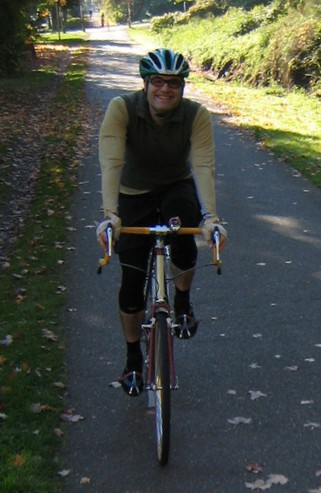

Volume 11 Issue 1 - January 2006
Article: Experiences of a Randonneuring Rookie
Ride Report: Fred Mulder's Stevens Pass Permanent
Ride Report: Peter Beeson's Stevens Pass Permanent
Article: Tales of DNF
Article: 2005 Brevet Finishing Time Statistics
NOTE: Please send any content for the newsletter to Patrick Gray
- SIR's first ride of the season is the Populaire on February 25.
- Congratulations to Mark Thomas and Terry Zmrhal for being elected to the RUSA Board of Directors!
- There has been some shuffling of the SIR Board - Peter McKay is taking a well-earned break and Amy Pieper will be heading to England for much of 2005. Peter Beeson and Patrick Gray have joined the board.
- If you haven't renewed your SIR or RUSA membership, now is an excellent time to do so. 2005 members should have received a packet from Eric Vigoren in early December.
- SIR wool socks are still available for purchase at Sammamish Valley Cycles. (Blatant lie, thy're gone, sorry!)
- If you have anything you'd like to submit to the SIR Newsletter, send it by e-mail to Patrick Gray.
Len Lescosky
This is a story of a first-year randonneur. But just because I earned some medals it is misleading to say this was my first year of long bike rides. It's more like I moved from the sandlot to the American League. I've been a bike rider for as long ago as I can remember. The long-distance bike bug caught me around 1980 when I was a high school student in Albany, Georgia. A friend gave me his old, well-used road bike. I cleaned it up, greased the bearings and adjusted them with a Crescent wrench, painted the bike with a spray can and away I went into the wilderness. No cell phone. No patch kit. It was the gators and me. These rides of probably no more than 30 or 40 miles are where I found my love for the solitude of the back roads, the dirt roads, and country store cuisine.
Bike riding in my college years was mostly cruising around campus. Following that came 14 years in Michigan and a lot of bike commuting and exploring the countryside where I lived. I found many beautiful country rides. With gradually fewer cows and more subdivisions I increased my riding distance to escape the expanding city limit.
 Len riding to SIR's 2005 annual meeting.
Photo: Tim CorkeryWhen I moved to Atlanta in 2002 I heard about randonneuring and a bike club that rode really long rides. Unfortunately my job required excessive travel and I never felt prepared to ride with the club. I did ride my first 100-mile ride though, as my wife signed herself up for a charity ride at the urging of coworkers. We spent the spring and early summer training, gradually increasing our distance until we finally rode the 100 miles.
Moving to Seattle last year was the opportunity I needed to make the leap to really long distances. Not only did my new job have less frequent travel, I could easily commute to work by bike. Training would be part of my daily routine. Finally I could join a randonneuring club. Having never lived in the area, I welcomed the chance to see Washington from a bicycle, with a group of fellow riders to show me the best roads.
The route for the 200-kilometer ride, the first of the series, looked promising. Starting southeast of Seattle, the ride would go south to Mount Rainier and then head back north farther to the west. The morning started cold, and gray. The rain started soon after we were on the bikes and was still going strong ten hours later when I finished. Rather than see the mountain, which was obscured all day by clouds, this ride turned into a lesson on the importance of quality raingear. The rain jacket didn't matter so much; we were all well soaked. What I found important was that my riding companions should have good fenders; otherwise I would have a face full of mud from their bikes.
A few weeks later the 300-kilometer ride was a lesson in stamina. My thought, any long ride could be broken up into a series of 300km rides. If I could finish a 300km ride in acceptable time, I could finish any ride. This distance was long enough that I had to start in the dark and finish in the dark. Faster riders might not have that concern. This was my opportunity to test all my randonneur equipment including lights and reflective gear. After a successful finish I felt prepared for anything.
Resourcefulness came soon after with the 400-kilometer ride. To call it 400km though is to not show sufficient respect. The first hour was a 10k pre-ride, uphill into a headwind to get to the official start. Then it was mostly a climb for the next 30k to the top of Blewett Pass, an elevation of about 3500 feet. Going over the top was quite a good feeling. I was anticipating the long, fast descent after the brutal climb. As I shifted to a higher gear I heard an unfamiliar clunk and felt my chain go slack. I stopped, examined my bike, and realized my rear derailleur was broken and not repairable. I was faced with two choices, abandon the ride and slink home, or continue for the next 370km with only one speed. In the early days of the Tour de France, the hard men of old rode many unpaved mountain passes with a fixed gear, one speed and no coasting. Surely modern man with better roads could do the same. Breaking out my tools I shortened my chain to fit one gear combination so I could ride up hill, down hill, and on the flats. Not optimal, but I was off.
I lost time with my repair so was at the back of the pack. I hoped to catch up with other riders at the rest stops. My plan worked well; I rode with others occasionally but with my one gear it was impossible to find another rider to match my speed. Surprisingly I was quicker than some who had 29 more gear choices than I had. With one gear I was slower than I had expected and rode through the night with no sleep, finishing as the sun was rising.
I knew the 600km ride was too long for me to finish with no sleep. I worried if I didn't get enough rest I wouldn't finish the ride. Rest turned out to be no problem, my strategy of considering the ride as two shorter portions worked well. Three hours of sleep was plenty to get me to the end. What I really learned here was navigation and camaraderie. My usual buddies left me behind, so I rode much of the ride alone. This was a problem only at one point. The instructions said to turn south but the street signs said east and west. I picked the direction that looked the most south, but it was wrong. Lucky for me a fellow rider who knew the way saw me and flagged me down before I went too far off course.
The 1000km taught me the value of familiar equipment. This was a three-day ride, over the mountains three times. Around Rainer, Mt. St. Helens, and Mt. Adams, through the desert in the opposite direction I had ridden a month earlier on the 400k, and then over the mountains again to home. To prepare for the big ride I bought new shoes that were similar to my old worn out shoes. Similar, yes, but they were not the same. By the third day my ankle had swollen to what seemed like three times normal size. I could barely walk but was still riding, only more slowly. Bags of ice and handfuls of ibuprofen could not help my tendonitis as I continued my physical punishment. Finally, almost 850 km into the ride, to avoid further injury I called it quits and called for a ride home.
Randonneuring is a sport of exceptional physical and mental challenge. It is a series of bicycle rides of progressively increasing distance where the rider is expected to be self sufficient no matter the weather or geography. Completing in order rides of two, three, four, and six hundred kilometers will earn a rider the Super Randonneur title. With his Super Randonneur medal in pocket he is then qualified to challenge a longer course of 1000 or 1200 kilometers. After my rookie season I am a Super Randonneur. I did not finish the 1000 km ride. What I learned in both success and failure this year prepared me for next season. I will be ready to do a 1200k ride next year, and maybe I'll do two.
Fred Mulder (with quotes from poetry and rock, just like in your yearbook, and apologies in advance for screwed up grammar and tenses)
It was cold and dark and foggy when I met up with Mike Richeson and Peter Beeson on Sunday morning, November 20th, a week ago. The ride started at the Duvall Safeway, which is the centerpiece of a mini-mall on the south end of town. Despite the glowing red "S", and all the newness and neon of the mall itself, and despite even Peter B's perpetual good cheer, there was little to dispel the mournfulness and gloom that seemed to be swirled in with the mists and vapors of the immediate scene. Real Sherlock Holmes stuff. I don't think any of us would have been surprised to hear the howl of a werewolf or the sight of a hunchback skulking off to some dank little hole in the earth.
This early break in the narrative is to tell you about my gear. Those on the edges of their seats can skip ahead.
BIKEWe headed North through town then peeled off to our right, Eastward, in an almost instant exchange of town for country: Barns stables, and fields to our right; to our left, woods sloping down to the quiet, slow-moving Skykomish.Surly Long Haul Trucker Mavic A719 touring rims 32mm Panaracer Pasela tires Brooks saddle with Serfas cover Shimano Tiagra triple/9-speed drivetrain with bar-end shifters Planet Bike fenders with mud flaps front and back. CLOTHES
Gloves, three pairs: full-fingered neoprene "Spokes" gloves; 1/2-finger rag wool gloves that Grant Petersen won't shut up about; full-fingered, army-issue, thin wool gloves. Thin wool tights under Ibex El Frito Knickers Knee-length ski socks Thin polypro shirt and thin wool shirt, both with sleeves cut off to make "shests" or "virts". HINT: shirt+vest=??? Traditional wool jersey. Wool arm-warmers. Extra arm-warmers. Thin wind-proof vest. Burly Jacket Bike shoes. Neoprene booties. Wool beanie. Polypro balaclava. TOOLS
3 Allen wrenches. "Fender wrench" that's, I think, 10mm. Spoke wrench. Chain tool. Patch kit (Park). Frame pump. Swiss Army knife w/screwdrivers, small pliers and no corkscrew. Spare tube. LIGHT
Cateye Opticube (the big one) that's especially lousy on wet roads. Three blinky red lights on the back all Cateye but none were my favorite model which is the - drum roll please! - I don't know. It's the one that's always blinking up and down on Peter Beeson's bike. Long and thin. Cateye. It's the best. Anything else is inferior. (I think he's talking about the TL-LD600. -Ed.)
It's funny, I guess, that things can sometimes be so miserable and so beautiful at the same time. On rides like these you see this particular paradox all the time, but there are other kinds, too. When I say it was cold I mean it was crystals-in-the-water-bottle cold. Put the balaclava down your shorts cold. Why-are-my-brake-cables-stuck(?!?!) cold. And then for some reason you reposition your outlook for a blip and actually "see" the droplets of the fog passing through the beam of your headlamp all silvery swirly and soft and it's so particular and lovely that you forget momentarily that there's a bed back home, probably still warm.
Chasing down your buddies gets your blood pumping and lets you forget that you're cold. The road ahead delineated less by its own form than by the blinking lights that seem to be snaking off into oblivion. You channel your inner Eddy and hammer, and spin, and hammer, and hammer until you're hooked on again and hot as a boiler.
Until, that is, you're chilled again by the realization that the wooden bridge you're thudding over is covered with frozen moss.
You're hot but you're cold. It's miserable but beautiful. You're Eddy Merckx but you're chasing down a couple of middle-aged men. This, my friends, is the Essence of Rando, and it's not for everybody.
I had just caught up to Peter and Mike and was busy pretending I'd fallen off the pace purely on a whim when Peter pulled out his magic wand and - "Pling" - I was the guy doing the ride report. Ample opportunity here for me to talk about how Peter does the "Pling" thing in character, complete with blond ringlets and tiara, but since I've already characterized him as middle aged I'll just skip it.
Where was I? Oh yeah, ride report. Now I was riding along and looking at everything and wondering how I was going to write about it. How am I going to describe that frost-encrusted fence post? How am I going to describe the "weight" of the smoke coming from that chimney? How can I describe the fact that right now I'm riding over a grated bridge and yet I'm "seeing" my self from below, from under the bridge, through the "eyes" of a trout....
At one point we were riding three abreast like Ponch and John, and..."Sarge" I guess, silent except for the whir of our tyres on the tarmac, the beams of our lights on the road ahead, I remembered the lines from Dylan Thomas:
Do not go gentle into that good night
Rage, rage against the dying of the LightBingo! Not only had I found a title for my thingy, but I'd also hit on a major theme for the ride: Raging against the dying of the light.
On Nov. 20 the WOUL (window of usable light) was between 7:00am and 4:30pm. That's 9.5 hours of light available for a ride we were planning to do in 15.5 hours. On this schedule, and barring any complications, we were looking at a minimum of six hours of night riding, four of which were ACTUALLY GOING TO BE AT NIGHT!!!
That up there was technical-sounding stuff for the technical people in the audience. Truth is, I'm not very technical and anyway I was riding my new bike which doesn't have a computer yet and so I really don't have much to offer in the way of hard numbers. If you're wondering about how my new bike is, it's great. I love it.
For those of you following along to this broadcast in your De Lorme Gazeteer, we're on Page 80, about midway between Hwy 203 and Ben Howard Road. It's still dark, and in just a bit we'll head North on Mann Road and in to Sultan for a quick stop at a quick mart, at right around mile 20.
At mile 21 I punctured. This was at the very first part of Highway 2 going East, just outside of Sultan. While much has been written on the subject of flats, nothing quite approaches the meticulous codification and thoroughness that Dr.Vivian St. Swivens brings to it in The Book of Flats (Cambridge, 1974). For the type of flat I had I think it's best to stick with his classic description:
"One is ultimately hard put to find a flat more common, more banal, and in such utter want of anything in it vital enough to have the strength to die than the Denial Flat. Here, the rider finds himself saying, "My, but isn't the road rather dreadful just here", or "No, the steering's fine. I just need a cup of tea" until the material facts assert themselves more clearly and something needs be done."With the flat fixed off we went. Peter played the part of the hare on this whole side of the mountain, scampering up to Skykomish first, and then off again and first to the pass after we took a break. Next in line was Mike as the defacto tortoise, and then me as the defacto manatee. The way up was like riding into the arms of the sun. The road was wet from run-off, rain, and fog, and lit up and glowing with sunlight. To our left the peaks of Index and Baring burned white. To our right the waters at Canyon and Sunset falls did their usual incredibly dazzling thing.
At the Skykommish stop we each took on water and fuel, and it was nice to "click click" around on two feet before heading onward and upward. Click click click click, men's room. Click click click, Gatorade. Click click, Red Bull. Click, Snickers. Click click, cigarette lighter shaped like a Smith and Wesson. Click click - Whoa! What's this?! A cowboy with a belt buckle the size of a dart board! We look at each other trying to figure out who's going to say trick-or-treat first, but it's a perfect standoff! I pay for my drugs and I'm about to leave when he says - get this! - "Have a nice ride, guy."
Bursting with the eloquence of the inarticulate I stammer, "You too"
I'm ready to put my foot in my mouth and start chewing when an angel of dignified recovery visits me and I manage, "I mean, if that's what you say to someone who rides...uh..."
"Bulls and Broncs," he says. "Ride -em both."
"Jeez"-- Click click click, Ensure--"Falling off one of those must make falling off a bike seem like a walk in the park."
"I wouldn't know, on both counts. Thing is, though, we fall on dirt, you fall on pavement and that's gotta hurt. We need to be a little more worried about what's falling ON us, like a big ol bull!"I left the store marveling a little at the strange things people do for fun and fulfillment. As we were pulling away from the Chevron, the cowboy and his wife gave a "beep-beep" from their Subaru and toodled off ahead of us.
The rest of the way up the pass was like what we had just covered - sunny and nice - except for the last 1/2 mile or so, which was steep and spiced to perfection with a really cold and blustery headwind. There was no stopping me, though. I was in full-fantasy mode, out of the saddle and torqueing my way to the summit in slo-mo as the music from the sound track - Foreigner, oddly--reaches a crescendo:
"Feels like the first time
Feels like the very first time..."We were stopped at the ski slope, our bikes leaned up against the snow-banks by the road, and I had just enough time to feather my hair back. Skiers and snowboarders clunked guiltily past us in puffy outfits while we did our best to keep our gloating to a minimum. I put on booties, doubled up on the gloves, pulled the balaclava out of my shorts and put it on my head, and put on my jacket. After that we were rolling again. About 10:30 a.m.
And not long after that - somewhere between Stevens Pass and Stevens Alpine Center - at a cruising speed of, oh, 28mph - BOOM! - the back tire blew! An HFC flat, which St. Swivens characterizes thus:
"The Holy-[expletive]-Crap! Flat is marked by a violent burst of the tyre's inner-tube, which is accompanied by a loud report and, in short succession, the utter surprise and panic of the rider."So now we're on Page 82 of De Lorme. We've been booking along, sharing turns at the front, enjoying the slight warmth we get as we drop in altitude. It's cold, and dead, and gray, and melancholy, and beautiful anyway. The riding itself, the movement and the pace, is beautiful, and fun.Charlie Rose: What did you do? I mean, a flat tire at speed on a slick road is pretty hairy isn't it?
Fred Mulder: Terrifying, Charlie. I don't know how I would have handled it if I weren't such a stud. What I did - I mean, in a nutshell - is squeeze the brakes until I thought my fingers were going to snap off and then drag my feet on the ground until I finally came to a stop, maybe a 1/4 mile later. It's something we practice a lot. But, as you may know, Charlie, problems have a way of breeding more problems. In this case, it was a bent rim resulting from the flat, a ding right where the tire and the rim touch, which in turn had the effect of leaving my rear brake all but useless. That's the problem that came back to haunt me...blah blah blah"
At Cols Corner I pull off the road and tell Mike and Peter to keep going. I only mean to fill my bottles at the Log Cabin Lattes drive-thru and then blast off after them. It's only when I'm passing my bottles through the window that I realize that the girl running the stand is none other than Veronica Mars, TV high school sleuth!
"Hey Veronica", I say. "Love your show - oh, hey, can you PLEASE fill these?!? I'm thirsty like McNirsty."
She gives me a look that says, "McNirsty?"
"McNirtsty?" I say. "Ron McNirsty? You know, the accordion player on Lawrence Welk that..."
She smiles, sort of. "Thanks", she says, and then, with horror not entirely feigned, "Um, do you want me to do something about whatever's GROWING in this bottle?"
"No time," I say. "I am wondering, though, what you're up to out here."
"If I told you..."
"You'd have to kill me. Thought so. Bye Veronica. Thanks."
"Bye, Fred."Time to catch Peter and Mike, I channel Judas Priest and let the power of their music charge me. I hammer, and spin, and hammer, and hammer and pretty soon my blood is pumping and I'm one with the lyrics.
"If you think I'll sit around as the world goes by
You're thinkin like a fool -cuz it's a case of do or die.
Out there is a fortune waiting to be had,
You think I'll let it go you're mad
You got another thing comin'...."In no time at all I'm back with Mike and Peter, spinning our way along the river, the rocks and trees on the banks dusted with snow. We were in good spirits and riding fast.
Leavenworth was a welcome site. The streets were empty - I rode with no hands through the center of town - and the town itself was socked-in and gray, which sounds like a bleak picture but to a group of riders it's really a relief not to deal with the usual squadrons of gurgling Harleys and aimlessly wandering tourists.
After the Chevron control I popped ahead of my companions to check on the status of Der Rad Haus, the local bike shop, to pick up some extra tubes and see if I could do anything about my rim, but the sign told the story: "Schlussen im Winter."
An about-face pointed me toward our lunch spot, a restaurant with an apparently (I'm a regular Mr. Magoo without my glasses, and I wasn't wearing them) bold take on the "fusion" concept--German-Irish cuisine. I stepped in to Der McDonalds, ordered the schnitzel (served in "nugget" form, clever) und frites, and sat down with the boys. Beverages were a serve-yourself affair presided over proudly by the head waiter, whose arms sported the tattoo work peculiar to more than one government run institution, and whose necktie was embroidered with pictures of the restaurant's mascots - Der Grimmace, die Fry Guys, Die Hamburgler, und Mayor McCheese.
"Nice tie", I say, trying to be banter-rific.
"This?!" he says, leaning in. "Oh man! Dude! I HATE wearing this thing! I wish they could, you know, silk-screen the thing right on to the shirt! Save me some time in the morning!"We finished and left, and booked it out of town hoping to make Stevens Pass with some light left for the descent.
No dice. Mike Richeson flatted eight miles before the summit, right where BNSF crosses the road. I remember this spot because someone had managed to put a perfectly spec'd, absolutely world-class snowman up on the trestle, complete with coal buttons courtesy of the train! The tire had to be repaired twice, really: Once to replace the tube, and again to replace the tire itself, which revealed a large split upon inflation. The whole operation took about 25-30 minutes.
It was about 5:30pm and dark when we hit the pass. A tired skier looked us over as we prepped for the descent and said...in essence, "That's crazier than anything I would try."
Mike was rigged with a huge assortment of lights: A NightSun-type light mounted to his bars; a generator light mounted to his fork; a headlamp and I think a few other forward facing lights. He had three red blinking lights on the back, all bright and visible.
Peter had his usual excellent set-up: two parallel fork-mounted generator lights; two parallel stay-mounted rear blinkies.
All I had was some rear blinkies and a lousy CatEye Opticube Whatever and, Let Me Tell You People, on a wet road, on a steep and rutted grade, with truck traffic and drunk ski traffic roaring up behind me and passing with a "GET OFF THE ROAD!!" thrown in, with stark terror running through my veins and a rear brake that was basically useless, my little CatEye was totally, totally, TOTALLY INADEQUATE!!! Anyone who wants to talk about how a minimum of light can actually be a nice thing can actually just TALK TO THE HAND. Twirling gaily up a mountain pass on a balmy summer night and having pretty thoughts about the stars is one thing - and, okay, a good thing - but bombing down an icy pass in November is another thing entirely and - sorry if you don't want to be TOLD anything - you want as much light as you can get!
While I'm on the subject of WHAT YOU WANT, here's another thing. Skip ahead if you're offended. You're new to Randonneuring and you need a rig? Simple:
Surly Pacer Open Pros Ruffy Tuffy's Ultegra brakes and drivetrain, or whatever Fenders w/ flaps front and back A rack? Maybe. With all the money I just saved you, you can buy the best lights in the world, and I suggest you do it. With the time I just saved you, you can read a book, maybe Proust.Thank you, Peter Beeson, for guiding me down the pass.
After regrouping at the bottom we rolled in to Gold Bar together and stopped for a bathroom break. We rolled out single file, the best way to negotiate the traffic that runs in a single lane in those parts. Peter on-point, Mike in the middle, me in the back.
I saw it all.
What I told the police officer was that we were going between 20 and 25mph. Peter's right index finger was still pointing to the pothole in the road when Mike maneuvered one way, then another, then hit the pothole on a slant. He went down prone, like Pete Rose into third, his bike still clipped to his feet and dragging behind him, all those blinking red lights skittering ahead of him on the pavement.
I wasn't exactly off the hook at this point. There was traffic behind me and a downed cyclist 1.76 seconds ahead of me.
Swerve left? Traffic.
Swerve right? Curbs. Ruts.
Plow through? Ouch! Double Ouch!
Bunny Hop? Nobody actually does that, do they?
I did a double-swerving plow-hop with an impromptu foot drag. It was my only option.Time to deal, isn't it?
Stop traffic or immobilize Mike?
Do both. I yelled at Mike not to move while I waved some cars around. Nothing was barreling in just then so I put my head down to check out Mike.
Snoring. Out like a light.Meanwhile, Peter called 911 and stood next to Mike with his blinkies flashing up the road, an alert to oncoming cars.
In - what? - five minutes the Fire Department was there working on Mike, and from that point until the time we got out of there Peter and I were the go-to guys for explanations and details. I think it was Peter who called Mike's wife--and all I can say about that is that I hope I never have to do that, and I hope he never has to do that again.
The ride was pretty much shot to hell. After all the commotion and stress, and with Mike's prognosis still questionable, neither of us felt like riding.
(And that's all on the one hand. On the other, and I feel like a ghoul for saying it, I felt like I was quitting a marathon in the 24th mile! Just 90 minutes of easy pedaling and my 5000k monkey would be off my back, or ready at least to morph into some other kind of monkey! Maybe RUSA should come up with a phantom mileage award for the mileage people accrue before DNFing. Right now I'm at 375m.)
We got a ride back to the start from a young fireman and then caravanned from there to the hospital in Everett to check on Mike. Apart from looking like he'd just gone two rounds with Mike Tyson, and another two rounds with a bobcat, he looked to be doing...O.K...just in need of some healing time. Mike's wife, daughter, and grand-daughter were there, looking relieved that things were only as they were and not worse. Nice people.
A few lessons learned:
If you can't move a downed rider you can at least keep him or her warm. Cover the person with jackets and spare clothes. It can't hurt (at least if it's cold out) and it lets you feel like you're doing something.Part of the ethic of randonneuring, whether stated explicitly somewhere or not, is that (I'll put the rest in quotes to simulate some kind of haunting inner-voice.) "while we may not be racers or superstars we sure as hell are RIDERS. WE RIDE, damn it, even if it's cold, or dark, or sleeting, or even if it means riding the wrong way up a freeway. WE RIDE."Don't ride Stevens Pass Westbound if the conditions are bad.
Good lights can help you ride faster, which in a lot of cases is the safest way to ride.
At home I was able to check my bike out after riding 175 miles in rainy, snowy, gritty conditions and here's what I noticed - a front mud-flap does a lot to keep your feet dry and your drive train clean. Really. It translates to less muck to clean up and parts that last longer.
Just because my back brake was shot doesn't mean I didn't use it when push came to shove. At home I noticed two inner-tube "blisters" poking through the sidewall of my brand new Panaracer Pasela. Yikes!
Paselas are great tires, but in conditions like the ones on this ride go with something with a bombproof sidewall.
The good part of this ethic (and yes, I exaggerated) is that it turns what we do into a sport. The bad part about is that it's a form of pressure that can bring about bad decisions. In a sense, my decision to ride down the pass with cheesy lights was "made good" by the fact that there were no unlucky or disastrous consequences. Sure, it's flawed logic, but it's something we all do to a greater or lesser degree. It's called gambling.
Sometimes the only thing harder than standing up to your enemies is standing up to your friends.
And sometimes that so-called "friend" is yourself. It's such a chestnut that I feel a little like Shaggy lecturing Scoob, but don't reach for the remote just yet. All I'm saying is don't be a knob when your buddies get wimpy. Let them go there, and try really hard to contain the fires of smugness and disdain that seem to be breaking out everywhere within you. It's hard, sure, but we're RIDERS, not racers, and that's how we do it.
Editors notes:
Dylan Thomas "Do not go gentle into that good night" can be found at: http://en.wikipedia.org/wiki/Do_not_go_gentle_into_that_good_night
Foreigner's "Feels Like the First Time" is the very first track on their very first album - the self-titled "Foreigner" released in 1977.
Judas Priest's "You've Got Another Thing Coming" can be found on their 1982 "Screamin for Vengeance" album.
The Bishop of Winchester, or St Swithin (St. Swivins), died in AD 862. In legend the monks could not remove his body for 40 days and 40 nights because of torrential rain. It has now become folklore that if it rains on St Swithin's day (July 15), it will rain for 40 days and 40 nights.
An example of Fred's bike can be found here - http://www.surlybikes.com/virtual_LHT.html
"Ponch and John" is a reference to the TV show "CHiP's."
"Shaggy lecturing Scoob" is a reference to "The Scooby Doo Show."
Peter Beeson
At the last moment plans to visit family in Moscow, ID were scrubbed given the challenges of driving I-90 over Snoqualmie Pass. This meant that we'd be in town for the holiday and celebrate Turkey dinner in Seattle.
Immediately I thought what a grand opportunity to give the Stevens Pass Permanent a second attempt. I fired off a request to our RBA, Mark Thomas, and received the green light.
A quiet afternoon at the office on Wednesday allowed me to grab a four hour nap. The alarm rang at 7pm and I loaded up my gas powered rig for the drive to the ride start in Duvall. Note to permanent riders - ATMs make wonderful controls - the receipts are time, date and address stamped. I rolled out onto Hwy 203 in heavy, heavy fog. I was thrilled to reach the right turn onto Ben Howard Road (mp 23). Enjoyed this stretch of road - and saw a couple of cars and popped out onto Hwy 2 at Sultan. A quick stop at the friendly Chevron for some pop tarts; payday bars and a Hostess Cherry Pie meant I was well provisioned for the climb up Stevens Pass.
The moon lit the road and stars were ever so brilliant. Wind gusts made this stretch challenging and thoughts of turning the bicycle around wandered into my head. I vanquished them and kept the pedals turning. Arriving at the Chevron Skykomish is like visiting an old friend - memories o the Pieper's secrete control in 2003 on the inaugural 1000k route made me smile.
One last final push and I was on top of Stevens Pass - a stark, beautiful place at 2:30 in the morning. I rigged up for the descent and let her out - no cars in sight and bare, dry road surface was all mine. I arrived in Leavenworth and quickly discovered that not even a mouse was stirring at 5am. I improvised and used the local ATM for my control.
Now heading West I stopped at my all time favorite Control the Shell Station at Coles Corner. This used to a tiny gas station - now a large Swiss Chalet with an Espresso Stand. A chance to visit with the locals; meet up with the "law" and dine on a hot pocket and it was time to push on to the summit. All morning long I imagined the final descent of Stevens pass - without the head winds; and counting on the steep Western side of the mountain; and the beautiful day light I was planning on hitting a record speed high.
As I pushed off and prepared to revel in the high speed descent I saw the glint of ice and realized that a sheet of ice covered the road. With heart pounding; visions of splat I gently applied brakes and prayed to the patron Saints of cyclists. I survived without incident and treated myself to a breakfast sandwich in Skykomish. The sun shone; motorists were ever so pleasant and the return trip to Duvall was faster than expected.
This permanent is truly a jewel - bicycling Stevens Pass is awesome and the views along Ben Howard road in the daylight are simply spectacular. I for one am thrilled to be out of the mountains and will enjoy the rest of the winter in the lowlands. Best wishes for safe cycling through the winter.
Lessons Learned
ATMs make for the perfect controls (time/date stamped receipts) New E6 bulbs create brilliant light - install new bulbs before every long night time ride Your water bottles can freeze on the ascent of Stevens Pass 14 Degrees at the top of Stevens is really, really cold You can never have too many rear blinkies Wearing a Fluorescent Safety Vest is reassuring It's always a good call to have back up battery lights Ben Howard road in the day light is simply stunning as it parallels the Skykomish River Balaclava is a wondrous piece of apparel especially when descending Steven Pass Just the Facts
21:03 Departed Duvall
22:15 Popped out onto Highway 2 at Sultan
At mile 40.66 Flashing Sign Reads "Snow Removal Equipment Ahead"
12:15 Arrive Skykomish, MP49
02:30 Summit Stevens, MP64 (bike computer reports 61 miles to the summit from Duvall)
05:00 Arrive Leavenworth
20 minute stop at Coles Corner on return to Stevens Summit
08:30 Summit Stevens
20 minute break at Skykomish Chevron - hot breakfast sandwich is delicous
11:00 Arrive Gold Bar - quick Cherry Pie and Coca-Cola
12:31 Return Duvall - ride finished
In 2005 there were 25 DNFs ("Did Not Finish") on SIR brevets, not including the Cascade 1200. As riders begin a brevet the thought of a DNF might be looming large in their minds, it might be a faint nagging doubt, or it may not have even occurred to them. Many DNFs can be attributed to injury, fatigue, equipment failure or failing to make a time cutoff. Stopping a ride far from home and without the benefit of a sag wagon can be a daunting prospect. In an effort to reduce the fear and mystery of DNFs, I put out a call for information from those who recently DNF'd. I wanted to get the details of what happened, how far along were you, did anyone try to talk you out of DNFing, how did you get home, and, most importantly, did the DNF mess with your head when the next brevet rolled around. Here are the stories from those brave enough to share them:Josh Morse (300k)
My name's Josh M and I'm a DNF'r, spring 300k. Here's my story...
This was my second season in SIR. I started in the summer of '04 and did a 100, 200 300. My intent was to do a whole series is the spring of '05. I was riding a lot for me (which is really very little), and on a training ride near home 2 wks before 300k I hurt my knee. I was signed up with some guys to do the Fleche, so I was concerned about recovery.
I started the 300 with no pain and rode too hard (faster than usual for me) as my fitness was making progress. At about 34 miles into the 300 (just a mile or 2 past the 1st control) and just a couple miles from my home in Olympia, my knee pain came shooting back.
I continued riding hoping it would pass but knowing from how it progressed when it started that it was going to be with me. I rode another 60 odd miles to just a few past the Blue Heron bakery where I got some shooting pain in my knee that really got my attention. At this point I was concerned; I would be riding further from home and the pain was of a different nature. "cell phones make you weak". I called the nurse line with my HMO- (I really believe in these things). I consulted a nurse who talked some common sense and I bailed. I called my wife who picked me up about 30 minutes later. I didn't want to do any permanent damage and soothed my ego with thoughts of future brevets.
I did ride the Fleche a few weeks later after having seen my doc and gaining an understanding that I was not going to cause permanent damage, just irritation. That ride went ok, though the pain did return at about the same distance into the ride. I backed off and took a lot of ibuprofen the remainder of the ride.
That's my DNF story. The biggest bummer is the injury/recovery cost me a bunch of early season momentum and made riding later in the summer feel a lot harder.
-------
Amy Pieper (1000k)
Amy's full DNF tale (dehydration) can be found here: http://www.seattlerandonneur.org/newsletters/2004/aug/index.html#2
Peg W tried to help keep me going but I had to stop to rest and try to regroup so I sent her on. Then I called Mark Thomas to let him know where I was and that I was going to take a nap and hopefully recover a bit. Unfortunately I still couldn't get any water so after dozing for about 30 minutes I called again to tell him I was DNFing. He offered to come pick me up which was great. I thought he might try to encourage me to keep going but when he showed up he rolled me up in his warm coat, loaded me and my bike and drove me to the hotel in Ephrata. I asked him this year why he didn't try to keep me going since he is really good at that and he said he could tell that I was DONE!
Regrets - I've had a few, but then, too few to mention. Anyways, other than not being able to check the 1000k distance off my list I didn't regret it. I was in bad shape and continuing would only have made it worse. Having pushed myself beyond the limit a couple of years ago the recovery was still fresh in my memory and I didn't want to have to go through that again. This year I was able to complete a 1000k and it was a great experience for me. I did it with Peter McKay, Brian List, and Karen Smith from BC and we all rode together with my hubby Robin supporting us at the overnights. Getting the 1000k completed got that monkey off my back so it was the right thing to do at that time.
--------
Jim Carson (200k)
Jim's full DNF story can be found here: http://www.jimcarson.com/a/2005/07/200k_a_chip_sea.shtml
I was clearly bonking throughout most of the ride, and the Fig Newtons didn't help. Also a factor was my being preoccupied with my business trip the next morning. Still needed to pack :-( It didn't help that I drove from home that morning rather than camping out at the Motel 6 and savoring those few precious hours of extra sleep.
No one was around to try to talk me out of DNFing. I biked back to the start. Slowly. I'm very disappointed in how this went, but clearly it wasn't working for me.
--------
Jan Heine (1200k)
My first-ever DNF was the Cascade 1200. I started with a cold, which did not improve as the day went on. When I called home from the first overnight stop, I found that my family also had the cold, and that I was needed at home. After hitching a ride to Portland, taking the train to Seattle and riding home, I spent three days in bed, being of little use to sick Barbara in her quest to take care of the sick children.
The beauty of being unsupported is that usually it is easier to continue than to abandon!
--------
Kent Peterson (Seattle-to-Spokane)
Kent's tale is from is blog and can be read in its entirety here: http://kentsbike.blogspot.com/2005/11/quitting-is-easy.html
I could have kept going. I should have kept going. I could still turn those pedals even when the song in my head was telling me that the heat was hot and that I was nothing but tired. I could have lied and said I was fine when Duane asked if I was OK.
Of course, I wasn't OK. But I should have gone on, not to win but to finish. That would have been a victory. But I was beaten because I forgot who I was. I raced against myself but I didn't measure up. I told myself that I was being honest and being smart. The truth of the matter, the truth I needed to learn, was that I don't race against people. I'm not who I am because I win, I'm who I am because I ride. And when I stop riding, that is when I'm not being my honest self. My honest self would lie even when I know I'm lying, say I'm OK when I know I'm not and then ride down the road to the only place that can turn the lie of the moment into the truth it has to be in the end.
Compiled by Michael Rasmussen
Michael Rasmussen took the time to compile statistics on the finishing times for each SIR brevet in 2005. This will be of incredible interest to those with a background in statistics, riders who want to measure their achievements against those of others, or people who simply geek out over any kind of data. As a refresher, -average means you add all the data points (finishing times) together and then divide that by the number of data points (riders). -Median is the middle value in a list of data. -Standard deviation measures the degree of dispersion from the average. A large standard deviation indicates that the data points are far from the average and a small standard deviation indicates that they are clustered closely around the average. One could reasonably expect that the standard deviation increases as distance increases, but look at the Spring 600k results! Now, who wants to send in some charts?SIR 100 km Populaire Results - March 5, 2005
Average Time: 4:53
Median Time: 4:44
Std Dev Time: 0:42SIR 200 km Results - March 19, 2005
Average Time: 9:31
Median Time: 8:24
Std Dev Time: 1:16SIR 300 km Results - April 9, 2005
Average Time: 14:44
Median Time: 14:22
Std Dev Time: 1:54SIR 400 km Results - May 10, 2005
Average Time: 20:56
Median Time: 20:42
Std Dev Time: 4:03SIR 600 km Brevet Results - June 4-5, 2005
Average Time: 35:26
Median Time: 35:30
Std Dev Time: 3:16SIR 100 km Populaire Results - July 9, 2005
Average Time: 4:23
Median Time: 4:18
Std Dev Time: 0:41SIR 200 km Results - July 23, 2005
Average Time: 10:14
Median Time: 11:50
Std Dev Time: 1:10SIR 300 km Results - August 6, 2005
Average Time: 15:58
Median Time: 16:02
Std Dev Time: 1:49SIR 400 km Results - August 27-28, 2005
Average Time: 19:42
Median Time: 19:30
Std Dev Time: 2:22SIR 600 km Results - Sept 17-18, 2005
Average Time: 33:37
Median Time: 35:14
Std Dev Time: 3:08
Paul Johnson, Peg Winczewski, Peter McKay, Amy Pieper, Mark Thomas, Terry Zmrhal, Jon Muellner, Peter Beeson, Wayne Methner
Membership Fee:
$10 - full membership w/e-mail newsletter or
$15 - full membership w/printed newsletter.
Membership Address:
c/o Terry Zmrhal
9531 112th Ave NE
Kirkland, WA 98033
425-828-7818